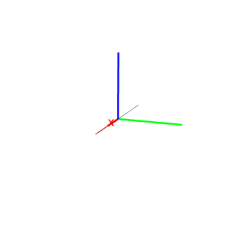

14.16.8 Edges: line_segments
The line_segments command takes as argument a polyhedron.
line_segments returns and draws a list of the edges of the
polyhedron.
Input:
line_segments(polyhedron([0,0,0],[-2,0,0],[2,0,0],[0,2,0],[0,0,2]))
Output:
Input:
line_segments(polyhedron([0,0,0],[-2,0,0],[2,0,0],[0,2,0],[0,0,2]))[1]
Output:
